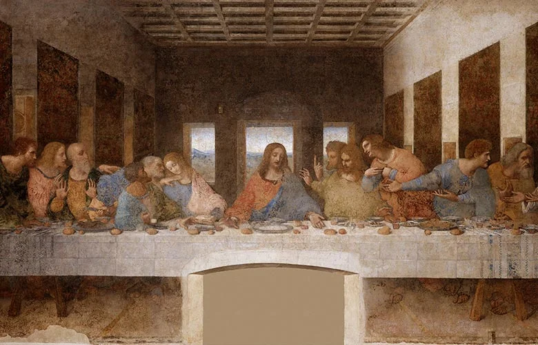
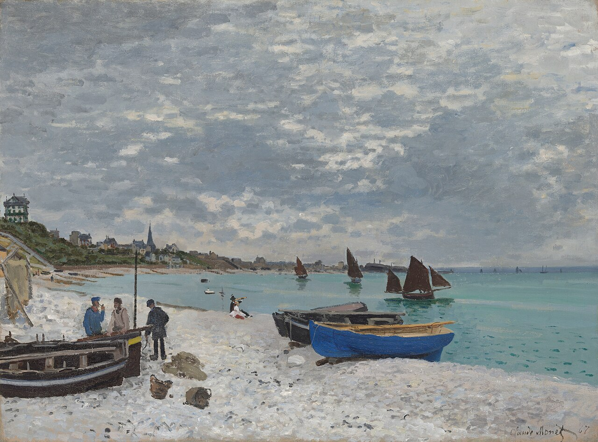
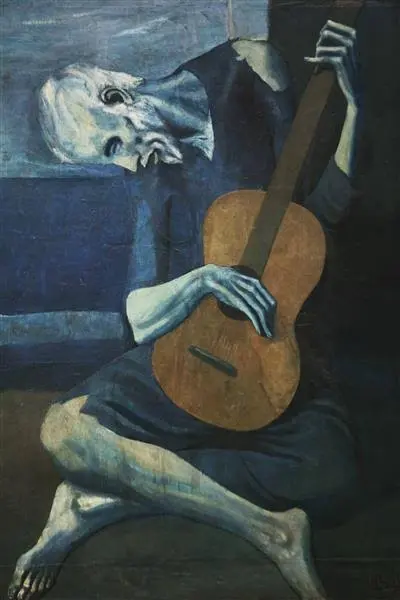
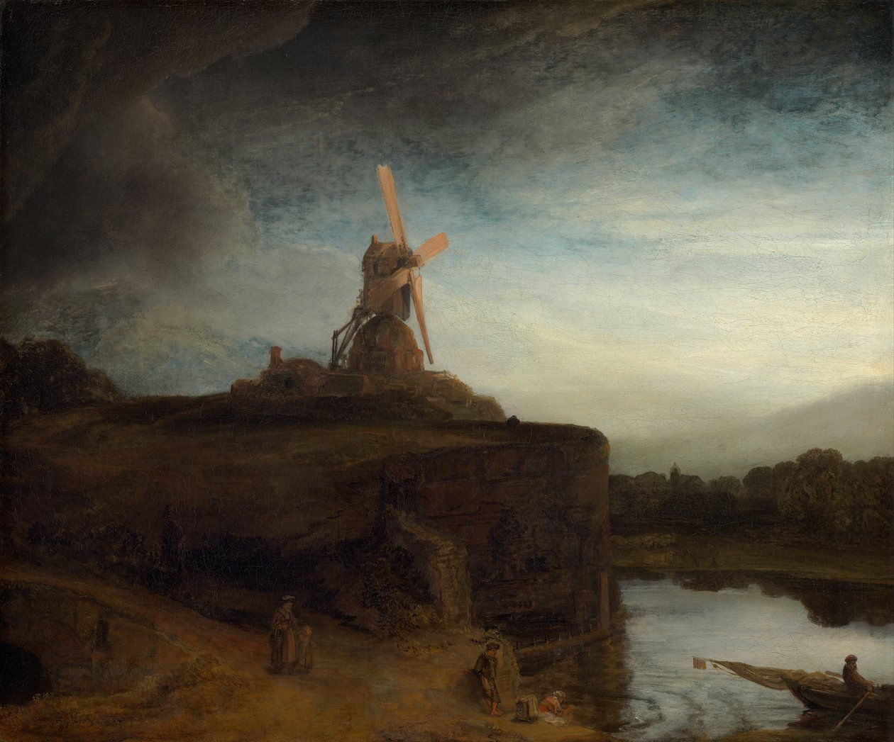

A criação de Adão
A Criação de Adão é um afresco de 280 cm x 570 cm, pintado por Michelangelo Buonarroti por volta de 1511, que fica no teto da Capela Sistina. A cena representa um episódio do Livro do Gênesis no qual Deus cria o primeiro homem a partir do pó da terra: Adão.
-
Pintado por Michelangelo Buonarroti.

A noite estrelada
A Noite Estrelada é uma pintura de Vincent van Gogh de 1889. A obra retrata a vista da janela de um quarto do hospício de Saint-Rémy-de-Provence, pouco antes do nascer do sol, com a adição de um vilarejo idealizado pelo artista. A tela faz parte da coleção permanente do Museu de Arte Moderna de Nova Iorque desde 1941.
-
Pintado por Van Gogh.

A Última Ceia
A Última Ceia é uma pintura mural, muitas vezes definida incorretamente como afresco, obtida com uma técnica mista "seca" sobre gesso de Leonardo da Vinci para a igreja de Santa Maria delle Grazie em Milão, Itália.
-
Pintado por Leonardo Da Vinci.

A Praia de Sainte-Adresse
A Praia de Sainte-Adresse é uma famosa pintura a óleo sobre tela de Claude Monet, criada em 1867. A obra retrata uma praia na cidade costeira de Sainte-Adresse, na Normandia, França, onde Monet passava seus verões na casa de sua tia.
-
Pintado por Claude Monet.

O velho Guitarrista
O Velho Guitarrista é uma pintura a óleo de Pablo Picasso , que ele criou no final de 1903 e início de 1904. Ela retrata um músico idoso, um homem abatido com roupas esfarrapadas, que está curvado sobre seu violão enquanto toca nas ruas de Barcelona, Espanha . Está em exibição no Instituto de Arte de Chicago como parte da Coleção Memorial Helen Birch Bartlett
-
Pintado por Pablo Picasso.

O Moinho
O Moinho é uma pintura doartista barroco holandês Rembrandt Harmenszoon van Rijn. Está na coleção permanente da Galeria Nacional de Arte em Washington DC. Por muito tempo, a atribuição a Rembrandt foi considerada duvidosa; foi restaurada nos últimos anos, embora não seja universalmente aceita. A pintura estava anteriormente na Coleção Orleans. Já foi propriedade de Peter Arrell Brown Widener.
-
Pintado por Rembrandt Harmenszoon.